What's up! My name is Deven, and I’m the proud owner and operator of Deeskey Auto Service, a local mobile mechanic business based in Provo.
As a lifelong car enthusiast, my passion for cars started when I was a kid, and it’s only grown from there. What started as a hobby has turned into a full-time business where I can combine my love for cars with the joy of delivering a top-quality service to my community.
As a one-man operation, I take pride in every detail of my work. I treat each vehicle as if it were my own, ensuring that every client receives the best care possible. My goal is simple: to make your experience as convenient and comfortable as possible, while providing a personal touch that larger companies just can’t match.
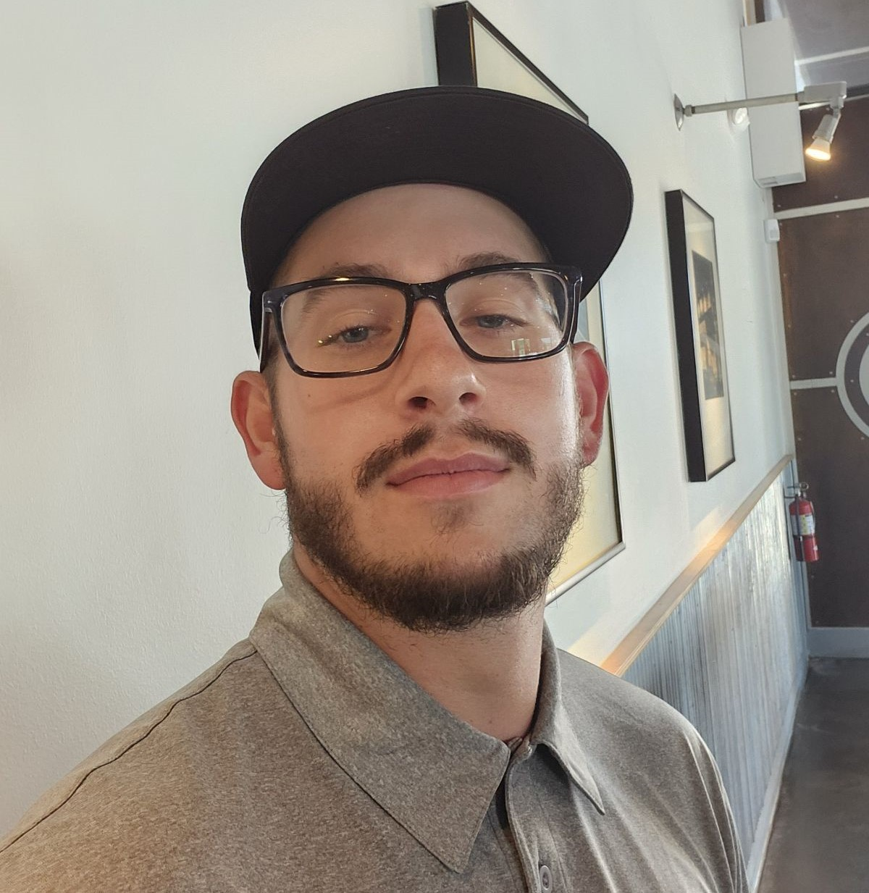
I grew up in Orem and have lived all around Utah County my whole life. My love for cars started at a young age, when I first began playing with Hot Wheels. This passion for cars evolved as I got older, moving from toy cars to video games. My personal favorite was Midnight Club 3: DUB Edition Remix. While many people gravitate toward Need for Speed, I preferred the Midnight Club series. The street racing vibe, coupled with 2000s-style hip-hop music, really resonated with me as a kid. The nostalgia from this game takes me right back to my childhood.
When I first played the game, I chose the 1964 Chevrolet Impala as my starter car. From that point on, and with a bit of influence from my dad, who was from Southern Los Angeles, I developed a love for classic muscle cars and lowriders. The flashy chrome, big rims, and bold paint were the signature style of the early 2000s, and I was heavily influenced by The Fast and the Furious movies, as well as shows like Pimp My Ride and West Coast Customs.
As my interest in cars grew, so did my fascination with customization. I was drawn to performance upgrades, wheels and tires, paint and graphics, and even air ride suspension and hydraulics. As a kid, I didn’t have a car to work on, but I found ways to express my creativity through my bikes and scooters. I would swap parts from different bikes to build the coolest one, often choosing the best "upgrades" I could find. At one point, I even made a lowrider scooter by putting skateboard wheels on it.
Then, in junior high, I got my first car. That was just the beginning of my journey into the world of cars and customization!
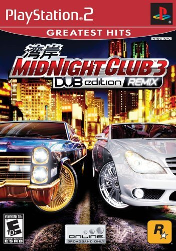
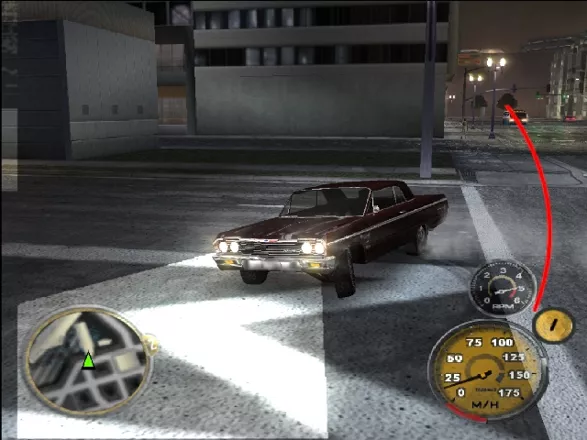
Throughout the years, I’ve gained my skills by doing the jobs I needed. My passion for cars started early, and I’ve never stopped learning and improving.
My first car was a 1980 Cadillac Coupe DeVille. I remember charging the battery and replacing the power steering pump—this was my very first time working on a car. After selling that Cadillac, I used the money to buy a 1987 Chevy Camaro. With the help of YouTube, I taught myself how to swap the engine and transmission. From there, I bought a 1994 Chevy Caprice, which I still own, and I continue to add customizations to it.


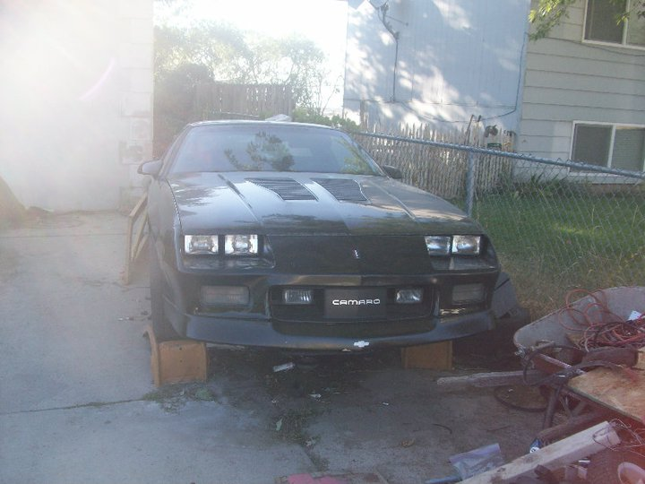
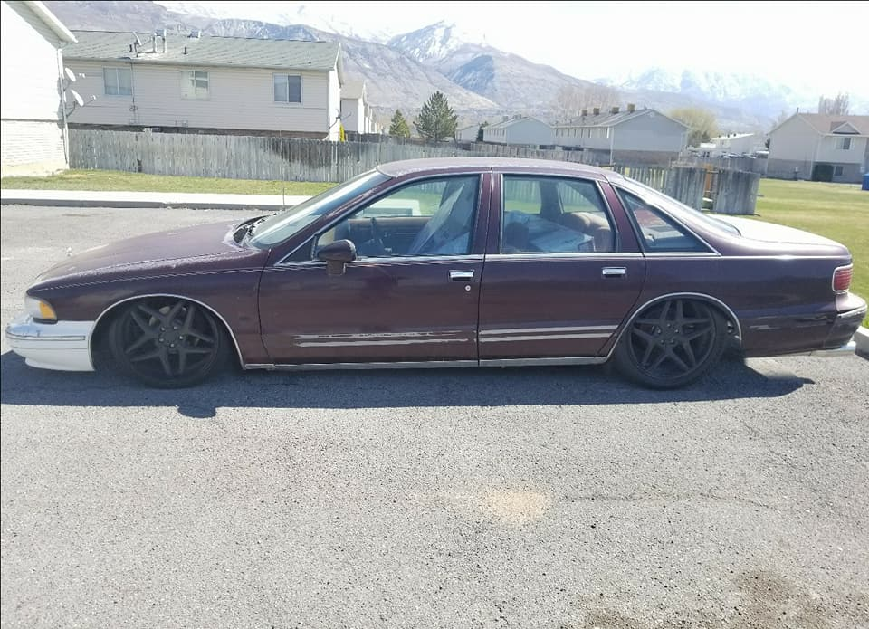
In high school, I missed having a Cadillac, so I bought a 1983 Eldorado. I threw on flashy 20” rims, installed a Cherry Bomb muffler and dual exhaust pipes, but eventually, I regretted having a front-wheel-drive car. So, I got a 1979 Coupe DeVille. I added 20” 100-spoke Dayton rims, 2 12” Kenwood subs, and tinted the windows. I even welded chrome knuckle dusters to the hood as a custom ornament.
At just 18 years old, I had the '83 Eldorado, '87 Camaro, '79 Coupe DeVille, and the '94 Caprice all at once! But at 19, with a baby on the way, I sold the Camaro, Eldorado, and Coupe DeVille to use the money for a place for me, my future wife, and our child.

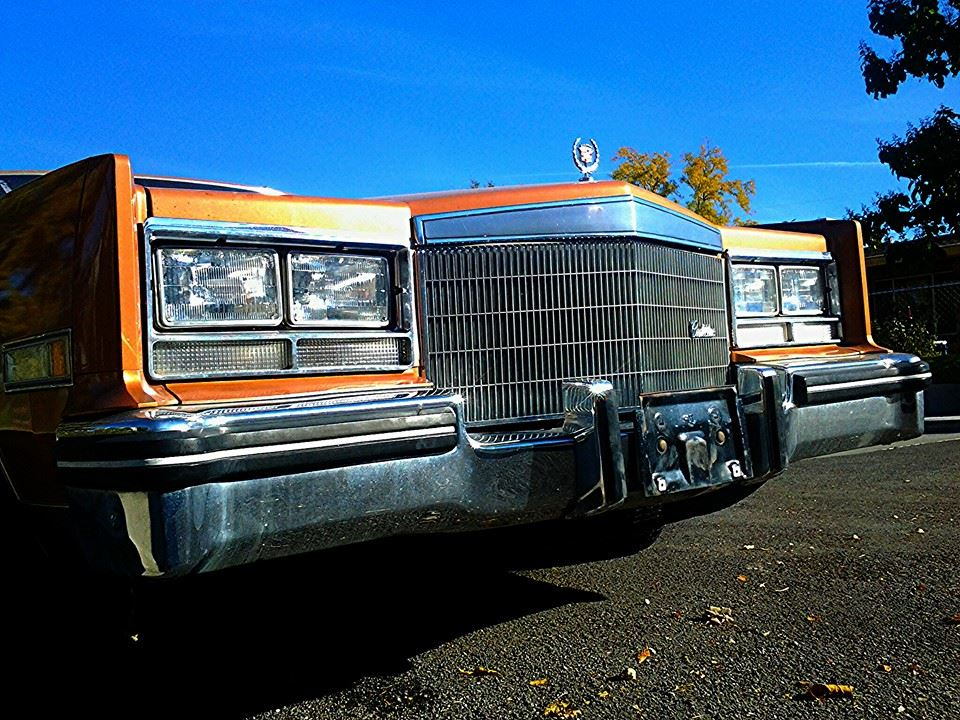
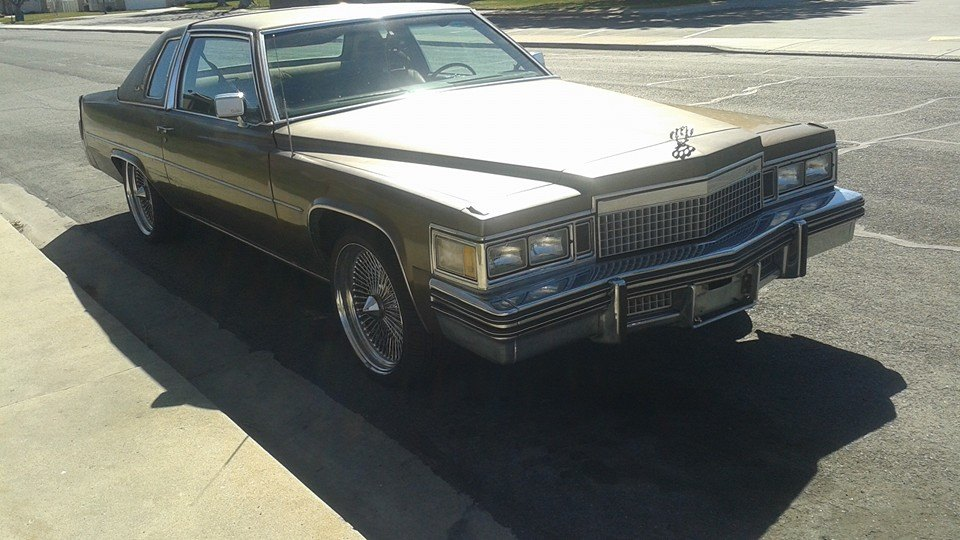
Years later, my amazing wife, knowing how much I loved Cadillacs, got me a 1973 Cadillac Coupe DeVille with a huge 500 cubic-inch motor. While it was an incredible gift, I didn’t have the skills at the time to fix the rust eating away at the body. I ended up selling it and used the money to buy a 1994 Buick Roadmaster. It had the same drivetrain as my Caprice, but with more Cadillac-like styling—best of both worlds. I added 2 12” Rockville subs, 2 Rockville amps, 20” rims, and lowered the car for a more aggressive stance.
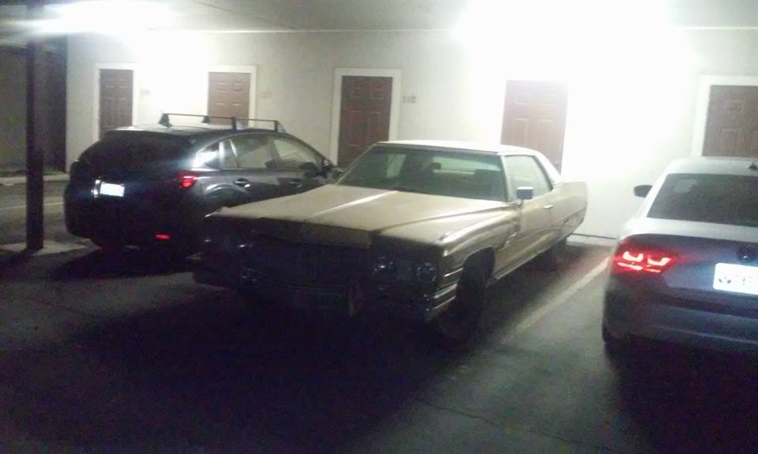
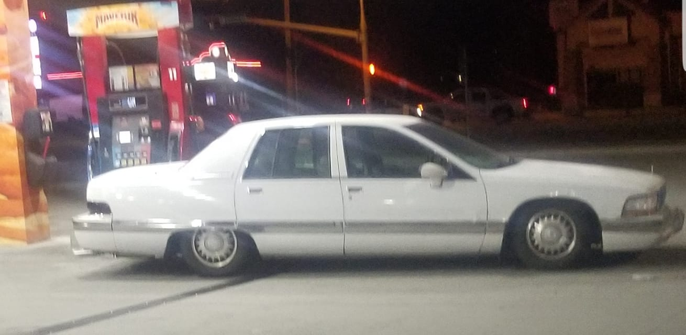
After a few years, my wife and I bought a 2016 Chevy Impala as our family car. In 2019, when we were buying our first home, I sold the Roadmaster to put the money toward our down payment.
In 2022, I picked up a 2004 Chevy Silverado. I tinted the windows, installed a rear roll pan, added dual exhaust outlets, slapped on 24” KMC wheels, and lowered it for a more custom look. Throughout the years, I also picked up various little project cars, bought, fixed, and flipped them as side projects.
Throughout this journey, I've worked on many of my friends' cars too, installing sound systems, radios, window tint, lowering kits, performing detailing, maintenance, performance modifications, and major mechanical repairs. I also attended MATC and the UVU automotive program for auto mechanics, furthering my knowledge and expertise.
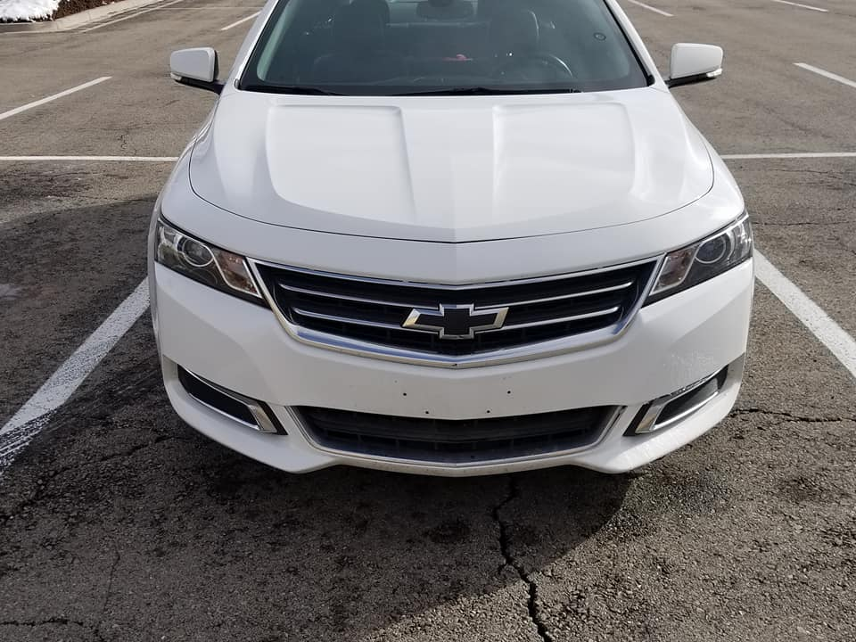
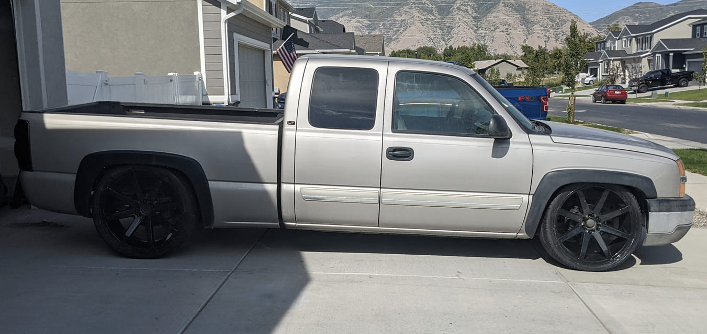